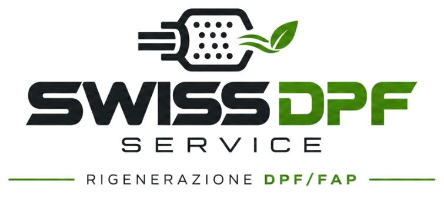

Specialisti dei sistemi antiparticolato in Ticino
Rigenerazione professionale DPF/FAP e GPF/OPF, decarbonizzazione preventiva e servizi dedicati a privati, aziende e officine.

- Filtri diesel e benzina
- Privati, aziende e officine
- Figino · Canton Ticino
Una competenza precisa. Quattro aree di intervento.
Ogni richiesta parte da una valutazione: individuiamo con te il servizio adatto al tuo filtro e al tuo veicolo.
Rigenerazione DPF/FAP
Servizio professionale per i filtri antiparticolato dei motori diesel, previa valutazione di idoneità.
Scopri di piùRigenerazione GPF/OPF
Servizio per i filtri antiparticolato dei motori benzina: Gasoline e Otto Particulate Filter.
Scopri di piùDecarbonizzazione preventiva
Prevenzione e trattamento degli accumuli carboniosi, secondo le modalità tecniche previste.
Scopri di piùServizio presso la tua officina di fiducia
Determinati servizi presso la tua officina di fiducia, quando tecnicamente possibile e previo accordo.
Scopri di piùDicci cosa succede, ti indichiamo cosa valutare.
Tre domande, meno di un minuto. Non è una diagnosi: serve a indirizzare la tua richiesta al servizio giusto.
Il servizio da valutare
Hai un controllo in arrivo? Verifica se il tuo diesel rientra nel controllo MFK.
Non è una diagnosi: ti confermiamo se il servizio è adatto dopo aver sentito il tuo caso.
Il nostro lavoro inizia dal filtro.
Siamo specializzati nei sistemi di filtrazione antiparticolato per motori diesel e benzina, nella rigenerazione professionale e nella decarbonizzazione preventiva del motore. Un riferimento a Figino per chi cerca un interlocutore dedicato a queste esigenze specifiche.
- 01 Attenzione al sistema e alle sue condizioni
- 02 Valutazione della fattibilità del servizio
- 03 Contatto diretto per il tuo caso
Dal primo contatto alla riconsegna.
Un percorso semplice. Le modalità precise dipendono dal servizio e dal tipo di filtro.
Contatto
Ci descrivi veicolo, sintomi e servizio che ti interessa, per telefono, e-mail o modulo.
Valutazione
Verifichiamo se il servizio è adatto al tuo filtro e al tuo caso, prima di procedere.
Preventivo
Ti comunichiamo costi e tempi per il tuo caso specifico, prima di confermare l’intervento.
Intervento
Eseguiamo il servizio concordato, con le modalità previste per il tipo di filtro.
Riconsegna
Ti consegniamo il lavoro svolto e ti indichiamo come usare al meglio il veicolo.
Valutiamo prima, poi decidiamo insieme.
Non tutti i filtri sono adatti a essere rigenerati. Per questo ogni intervento parte da una valutazione del caso, e ti diciamo con onestà se il servizio è adatto.
- Valutazione di idoneità prima di confermare l’intervento
- Costi e tempi comunicati per il tuo caso specifico
- Contatto diretto con chi si occupa del tuo filtro
- Nessuna promessa di recupero garantito o di compatibilità universale
- Il nostro ambito è la cura dei sistemi antiparticolato, non la loro eliminazione
Il tuo diesel deve passare la MFK?
Dal 1° gennaio 2023 il controllo periodico verifica il funzionamento del filtro antiparticolato dei diesel con una misura delle particelle. Una spia spenta non basta sempre a sapere come sta il filtro.
Hai un controllo in arrivo?
Descrivici il veicolo e le spie che noti: valutiamo insieme se un intervento sul filtro ha senso, senza promesse sull’esito del controllo ufficiale.
La tua officina. La nostra specializzazione.
Un canale dedicato alle officine interessate ai servizi professionali per i sistemi antiparticolato. Contattaci per conoscere il programma officine partner convenzionate SWISS DPF SERVICE e valutare una collaborazione.
Un contatto. Una competenza specifica.
DPF/FAP per motori diesel
GPF/OPF per motori benzina
Servizi da valutare in base al caso
Modalità e condizioni della convenzione vengono definite direttamente con l’azienda.
Più vicini alle tue esigenze.
Presso la tua officina di fiducia: verifichiamo insieme quali servizi possono essere effettuati o organizzati lì, secondo la fattibilità tecnica.
Partiamo dalle cose chiare.
Qual è la differenza tra DPF/FAP e GPF/OPF?
DPF (Diesel Particulate Filter) e FAP (Filtre à Particules) indicano il filtro antiparticolato dei motori diesel. GPF (Gasoline Particulate Filter) e OPF (Otto Particulate Filter) sono i filtri antiparticolato dei motori benzina.
È sempre possibile rigenerare un filtro?
No. L’idoneità dipende dalle condizioni del filtro e dal caso specifico: un filtro danneggiato, per esempio con fessure, potrebbe non essere rigenerabile. Per questo valutiamo il caso prima di confermare l’intervento.
Quanto costa il servizio e quali sono i tempi?
Dipende dal tipo di filtro e dal servizio richiesto. Descrivici il veicolo e il problema: ti rispondiamo con una valutazione e un preventivo dedicati.
La spia del filtro è accesa: cosa devo fare?
La spia indica che il sistema ha rilevato un’anomalia. Continuare a guidare a lungo con il filtro intasato può peggiorare la situazione: è meglio farlo valutare. Contattaci descrivendo spie e sintomi.
Il primo passo? Un contatto diretto.
Raccontaci di cosa hai bisogno, per il tuo veicolo o per la tua officina. Valutiamo la richiesta e ti indichiamo il servizio adatto.
SWISS DPF SERVICEVia Pree 1
6918 Figino – Canton Ticino (CH)
Indicazioni con Google Maps · Apple Maps